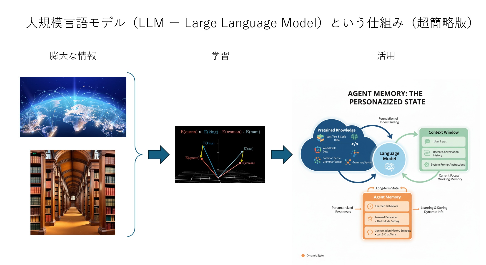

2026-09-25 第１回準備幹事会（オンライン）
■ 開催日時
9/25 (金) 20:00 ～ 21:00
■ 接続情報
・ Zoom 接続情報
Zoom ミーティングに参加する
ミーティング ID: 897 9687 4231
パスコード: 44znFb
■ 幹事会参加登録
【伝助】修道２５幹事会日程調整
https://densuke.biz/list?cd=DPVD2ewB3AACMfzR
参加予定者７名（登録順）： 唐崎、川本雄、草野、国原、大利、森、高橋
■ 同期会日取りアンケート
【伝助】2026年秋の同期会日取りアンケート（幹事内）
https://densuke.biz/list?cd=w5n2LUDmeatPUz9f
■ 議題
(1) 同期会の日時・場所
・ 早めに始めたいなら、昨年と同じ麻布十番の
パーチェ（PACE ITALIAN LOUNGE）（14:00 ～ 17:00）予約プラン
・ やや遅く開始でいいなら六本木の
フィオーリア（FIORIA）（17:00 ～ 20:00）予約プラン
どちらもプロジェクターやマイク利用可能で貸切で使えます。
(2) 同期会日時場所のアナウンス
・ 9/28 (月) 朝
(3) 同期会の内容
・ １０月中の幹事会（日程は後日調整）で検討
(4) 関東支部総会の担当学年対応
連絡メッセージ抜粋
【キックオフミーティング概要】
日時：10月6日（火）19時頃から
リアル会場：早稲田・高田馬場周辺
WEB参加：Zoom
【参加について】
参加可否は、9月25日頃までに連絡
■ 関連リンク
・ 修道２５回 同期会・イベント情報
・ 気楽に集まる会トップページ
・ YouTube プレイリスト
|
 |